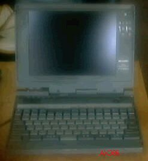

SHARP AX386について

AXは1986年にアスキーとマイクロソフトによって提唱された規格です。全世界で標準機となっていたIBM PC/AT互換機に日本語処理機能を付加したマシンを、日本で売ろうというもので、AX-VGAカードというのが、入っており、日本語表示を可能にしている。DOS/Vと似ているが、だいぶ違うようだ。
このAX386Nは、32ビットノートであり、AX286Nの後継機種。MZ型番（MZ-8676A）も持っている。80386SL(20MHz)、標準2MB(最大8MB)。
IBMのDOS/V登場とOADG設立に伴いシャープも二股をかけて、互換機ビジネスに取り組むことになったが、その最初のモデルである。
キーボードの右奥にトラックボールがあって、反対側にクリックボタンがある。丁度 IBMのThinkpad220の逆である。また、中央奥のボタンによってサスペンドディスク (メモリの内容をHDDに待避してレジュームする)への移行をするようになっていた。
右側面には3モードFDDとJAIDA4.1/PCMCIA2.0(TYPE2)スロットがある。
DOS/Vへ傾倒していった時代であり、さほど数は出なかったものと思われる。
モノクロの表示であるが、試しに、DOS/V用のWindows3.1を入れてみたら、ちゃんとと動いている。
現在、バッテリーが不良ですが、単２型で、直しやすようにみえるので、そのうちやってみようと思っている。
（2002/08/23 記）
古いノートパソコンのページに戻る